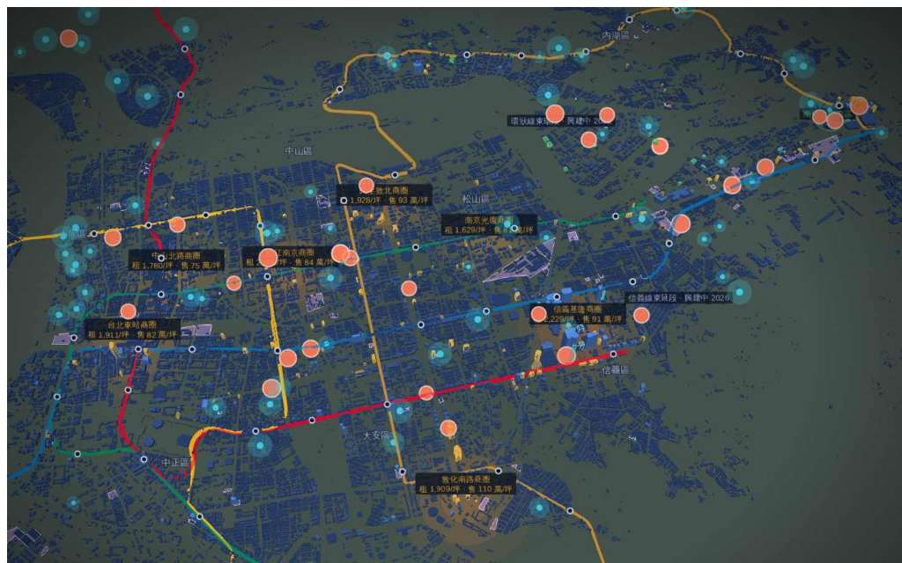

睿鏡
PeakLens
by PickPeak · FUNRAISE MCP
投資人鏡
開發商鏡
企業選址鏡
城市治理鏡
學研鏡
沉浸
平衡
標註
FUNRAISE MCP · LIVE
2026-09-14
11:52:07 TPE
◎
台北市 · 商辦 156 · 規劃中 13 · 都更 81 · 法人交易 33 · 公建 25
25.045N 121.555E · 9.5 km · -56°
圖層
6/11
面板
4
信義計畫區
A 辦 18 棟 · 均租 3,120/坪
圖層 · 6 / 11
商辦存量 156
未來供給 13
都更單元 81
上市櫃交易 33
企業遷徙 82
捷運路網 100
相機移動 4 秒後自動收合 → 邊緣把手
城市治理鏡 · 首長戰情室
11
興建中公共建設
82
跨區遷入企業 · 07 月
2,310
都更地區／單元
7
產業園區（雙北）
各區都更件數
大安區
360
中山區
294
中正區
236
士林區
233
信義區
174
信義計畫區
A 辦 18 棟
2012
2030
2026
圖層 · 11 / 11
商辦存量 156
未來供給 13
建照 98
都更單元 81
重劃／區段徵收 73
上市櫃交易 33
企業遷徙 82
公共建設 25
產業園區 7
商圈行情 7
捷運路網 100
資料面板 · 標註模式
116 億
上市櫃不動產交易 · 12 月
33
公告筆數
2.63%
商辦毛租金收益率
1,913
商圈均租 元/坪/月
各區都更件數
大安區
360
中山區
294
中正區
236
士林區
233
信義區
174
來源與工具呼叫
mops-property.search
district=信義區
3 筆 · 412 ms
actual-price-sale.aggregate
city=台北市
12 區 · 382 ms
company-registry.aggregate
month=2026-07
82 家 · 290 ms
1
信義計畫區
A 辦 18 棟 · 均租 3,120/坪
2
富邦金 · 基隆路商辦
276 萬
3
臺北機廠 都更
20 ha · 政府主導
4
中山區
遷入 21 家 · 7 月
2012
2030
2026
睿鏡 · 回答
2 MCP 呼叫 · 384 ms · 來源可回查
切到城市治理鏡：藍色虛線是興建中捷運，橘色弧線是 7 月遷入台北各區的 82 家公司。
睿鏡 · 回答
2 MCP 呼叫 · 384 ms · 來源可回查
哪些公司最近遷入中山區？——21 家，來自新北 12、桃園 4、台中 3、其他 2；最大：○○科技（資本額 3.2 億）。
對城市說話：「哪些公司最近遷入中山區」「切到標註模式」…
送出